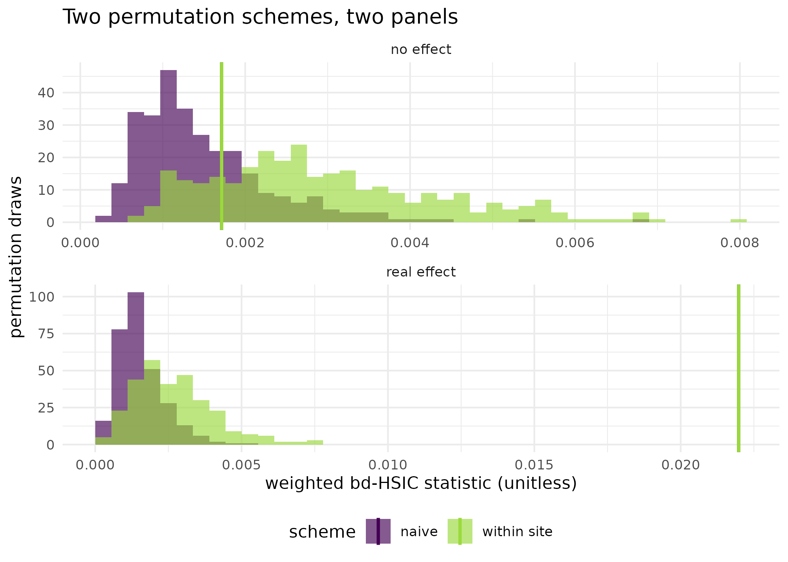
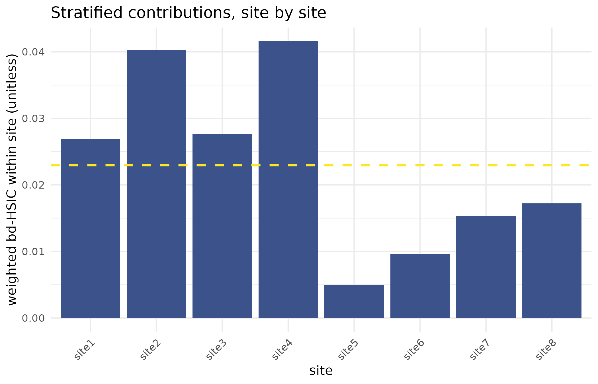

Multi-site trials and the permutation null
Source:vignettes/kernR-hierarchical-bdhsic.Rmd
kernR-hierarchical-bdhsic.RmdWhy
A trial statistician is looking at a panel rather than a field.
The residue-retention trial ran at eight sites and the sites differ
in ways the covariates do not capture. When the causal test shuffles the
outcome to build its null, it shuffles across sites, so the null absorbs
the between-site variation as though it were signal I could have
produced by chance. That inflates the null, or deflates it, and either
way the p-value is answering a question about a design I do not have.
Can I make the null respect the design? This vignette answers with
the cluster_id argument of the backdoor-adjusted test, on a
synthetic eight-site panel with a real effect and on the same panel with
the effect removed.
What
bd_hsic_test() builds its permutation null by shuffling
the outcome within clusters of observations that are exchangeable. Which
observations those are is the whole question, and the function offers
three answers.
The default, permutation = "auto" with no
cluster_id, clusters on similarity in the estimated
conditional density of treatment given the confounders, following Hu,
Sejdinovic and Evans (2024); it is the right choice when the design has
no natural grouping, and the vignette Does the treatment cause the
outcome, or do they share a cause? uses it throughout.
permutation = "naive" shuffles across the whole sample,
which assumes every observation is exchangeable with every other.
Supplying cluster_id activates within-cluster permutation
on the design’s own groups, so site-level effects are held fixed in the
null rather than being shuffled into it.
Supplying cluster_id also turns on a stratified
breakdown: per_cluster_statistic carries the weighted
bd-HSIC computed inside each cluster, which is where a single site
driving the whole verdict becomes visible.
Do
A synthetic eight-site panel
Eight sites, thirty plots each. Each site carries a random effect on yield with standard deviation 1, twice the residual noise. Rainfall and soil nitrogen are the measured confounders; the management variable depends on rainfall and on the site effect; and yield carries a genuine causal effect of 0.6 per unit of management.
set.seed(101L)
n_sites <- 8L
n_per_site <- 30L
n_obs <- n_sites * n_per_site
site <- factor(paste0("site", rep(seq_len(n_sites), each = n_per_site)))
site_effect <- rnorm(n_sites, sd = 1.0)[as.integer(site)]
z_conf <- cbind(
rainfall = rnorm(n_obs),
soil_n = rnorm(n_obs)
)
x_manage <- 0.4 * z_conf[, "rainfall"] + 0.3 * site_effect + rnorm(n_obs)
y_yield <- 0.6 * x_manage + 0.5 * z_conf[, "soil_n"] + site_effect +
rnorm(n_obs, sd = 0.5)The same data, two permutation schemes
fit_naive <- bd_hsic_test(
x_manage, y_yield, z_conf, permutation = "naive",
n_permutations = 299L, seed = 1L
)
fit_site <- bd_hsic_test(
x_manage, y_yield, z_conf, cluster_id = site,
n_permutations = 299L, seed = 1L
)
c(fit_naive$permutation_scheme, fit_site$permutation_scheme)
#> [1] "naive" "within_cluster"The same panel with the effect removed
Identical sites, plots, confounders and management assignment; the management term is dropped from the yield, so the only structure left is the site effect and the confounders.
y_null <- 0.5 * z_conf[, "soil_n"] + site_effect + rnorm(n_obs, sd = 0.5)
fit_naive_null <- bd_hsic_test(
x_manage, y_null, z_conf, permutation = "naive",
n_permutations = 299L, seed = 1L
)
fit_site_null <- bd_hsic_test(
x_manage, y_null, z_conf, cluster_id = site,
n_permutations = 299L, seed = 1L
)| Panel | Permutation scheme | Statistic | Null mean | Null SD | p-value |
|---|---|---|---|---|---|
| real effect | naive | 0.02198 | 0.00154 | 0.00081 | 0.0033 |
| real effect | within_cluster | 0.02198 | 0.00270 | 0.00136 | 0.0033 |
| no effect | naive | 0.00171 | 0.00151 | 0.00086 | 0.3200 |
| no effect | within_cluster | 0.00171 | 0.00297 | 0.00141 | 0.8000 |
The stratified breakdown
round(fit_site$per_cluster_statistic, 4L)
#> site1 site2 site3 site4 site5 site6 site7 site8
#> 0.0269 0.0403 0.0277 0.0416 0.0050 0.0097 0.0153 0.0172The figure: how the two nulls differ
null_df <- rbind(
data.frame(statistic = fit_naive$null_distribution,
scheme = "naive", panel = "real effect"),
data.frame(statistic = fit_site$null_distribution,
scheme = "within site", panel = "real effect"),
data.frame(statistic = fit_naive_null$null_distribution,
scheme = "naive", panel = "no effect"),
data.frame(statistic = fit_site_null$null_distribution,
scheme = "within site", panel = "no effect")
)
obs_df <- data.frame(
scheme = c("naive", "within site", "naive", "within site"),
panel = c("real effect", "real effect", "no effect", "no effect"),
statistic = c(fit_naive$statistic, fit_site$statistic,
fit_naive_null$statistic, fit_site_null$statistic)
)
ggplot2::ggplot(null_df, ggplot2::aes(x = statistic, fill = scheme)) +
ggplot2::geom_histogram(bins = 40L, alpha = 0.65,
position = "identity", colour = NA) +
ggplot2::geom_vline(
data = obs_df,
ggplot2::aes(xintercept = statistic, colour = scheme), linewidth = 1
) +
ggplot2::facet_wrap(~panel, scales = "free", ncol = 1L) +
ggplot2::scale_fill_viridis_d(name = "scheme", end = 0.85) +
ggplot2::scale_colour_viridis_d(name = "scheme", end = 0.85) +
ggplot2::labs(
x = "weighted bd-HSIC statistic (unitless)",
y = "permutation draws",
title = "Two permutation schemes, two panels"
) +
ggplot2::theme_minimal() +
ggplot2::theme(legend.position = "bottom")
Permutation null distributions under the two schemes, on the panel with a real effect and on the panel without one, with the observed statistic marked in each. Shuffling within sites holds the site effects fixed, which changes the shape of the null the observed statistic is scored against; the naive scheme shuffles those effects into the null.
cluster_df <- data.frame(
site = names(fit_site$per_cluster_statistic),
statistic = as.numeric(fit_site$per_cluster_statistic),
stringsAsFactors = FALSE
)
ggplot2::ggplot(
cluster_df, ggplot2::aes(x = site, y = statistic)
) +
ggplot2::geom_col(fill = "#3b528b") +
ggplot2::geom_hline(
yintercept = mean(cluster_df$statistic, na.rm = TRUE),
colour = "#FDE725", linewidth = 0.9, linetype = "dashed"
) +
ggplot2::labs(
x = "site", y = "weighted bd-HSIC within site (unitless)",
title = "Stratified contributions, site by site"
) +
ggplot2::theme_minimal() +
ggplot2::theme(axis.text.x = ggplot2::element_text(angle = 45,
hjust = 1))
Weighted bd-HSIC computed inside each site on the panel with a real effect, with the mean across sites marked. A site whose stratified statistic dwarfs the rest is a candidate for follow-up, either as genuine site-specific effect modification or as a data-quality problem.
Read
On the panel with a real effect both schemes reject: the naive scheme gives a p-value of 0.0033 and the within-site scheme 0.0033, against the same observed statistic of 0.022, because the statistic does not depend on the permutation scheme. What differs is the null it is scored against, and the figure shows that directly: the naive null has a standard deviation of 0.00081 against 0.00136 for the within-site null, and a mean of 0.00154 against 0.00270: holding the site effects fixed shifts the whole null upward and widens it.
On the panel with the effect removed the two schemes give p-values of 0.32 (naive) and 0.8 (within site) against an observed statistic of 0.00171. Both decline to reject, which is the right answer on a panel built with no effect. One draw is not a type-I error rate: what this pair of runs shows is the mechanism, that the two schemes construct different nulls from identical data, and not a measured false-positive rate for either. Establishing that would need the whole panel regenerated many times over, which is a simulation study and not a vignette.
The stratified breakdown is the diagnostic worth keeping. Across the 8 sites with enough test observations to score, the within-site statistic runs from 0.005 to 0.0416, a factor of 8 between the quietest site and the loudest. The second figure shows the spread. A panel in which one site towers over the rest is telling you something the pooled verdict does not: either the effect is real only there, or that site’s data need looking at.
Limits
This is a synthetic panel with balanced sites and one level of
nesting, and every result above is a single run. The within-site scheme
needs at least two test observations per cluster, and the test split
takes only part of the sample, so small clusters are reported as
NA in per_cluster_statistic and contribute the
identity permutation to the null; a design of paddocks with three to
five plots each has little within-cluster permutation power and is
usually better pooled to the site. The per-cluster statistics are
reported on the raw scale and are not weighted by cluster size, so an
unbalanced panel needs a size-weighted summary computed outside the
function before the sites are compared. The choice of clustering level
is an assumption about exchangeability, not a fact the data can supply:
within-site permutation assumes plots inside a site are exchangeable,
which a systematic within-site layout would break. Finally, everything
the vignette Does the treatment cause the outcome, or do they share
a cause? says about the density-ratio step applies unchanged here,
including the effective-sample-size floor.
Choosing the scheme
Where the observations are genuinely independent and the design has
no grouping, leave permutation at "auto" and
supply no cluster_id: the propensity-similarity clustering
is the intended default. Where the design has sites, seasons or paddocks
that the covariates do not fully explain, supply cluster_id
at the level you are willing to call exchangeable, and take the
within-cluster scheme it activates. permutation = "naive"
is for the case where within-cluster independence is plausible on other
grounds and maximum power matters more, which is rare in a field
trial.
Notes on practice
Cluster size. Within-cluster permutation needs at
least two test observations per cluster, where the test split is one
minus split_ratio of the sample. Clusters below that appear
as NA in the stratified breakdown.
Many small clusters. Permutation power falls with cluster size. Pooling to a coarser level, site rather than paddock, is usually the better trade.
Imbalanced designs. Combine the per-cluster statistics with the cluster sizes yourself if a size-weighted summary is what the report needs.
What to read next
Does the treatment cause the outcome, or do they share a cause? introduces the backdoor-adjusted test and its density-ratio step, and is the place to start if bd-HSIC is new. When plots sit inside farms applies the same clustering idea to the doubly robust distributional tests, with a within-cluster and between-cluster decomposition this vignette does not compute. Choosing a density-ratio backend covers the adjustment step whose weights also determine the default clustering.
References
- Hu, R., Sejdinovic, D., & Evans, R. J. (2024). A kernel test for causal association via noise contrastive backdoor adjustment. Journal of Machine Learning Research, 25(160), 1-56.
Reproduce
Seed 101 for the synthetic panel and for the null
variant; seed = 1L passed to every test so the
density-ratio fit and the permutation draws are fixed. Package versions
follow.
sessionInfo()
#> R version 4.6.1 (2026-06-24)
#> Platform: x86_64-pc-linux-gnu
#> Running under: Ubuntu 24.04.4 LTS
#>
#> Matrix products: default
#> BLAS: /usr/lib/x86_64-linux-gnu/openblas-pthread/libblas.so.3
#> LAPACK: /usr/lib/x86_64-linux-gnu/openblas-pthread/libopenblasp-r0.3.26.so; LAPACK version 3.12.0
#>
#> locale:
#> [1] LC_CTYPE=C.UTF-8 LC_NUMERIC=C LC_TIME=C.UTF-8
#> [4] LC_COLLATE=C.UTF-8 LC_MONETARY=C.UTF-8 LC_MESSAGES=C.UTF-8
#> [7] LC_PAPER=C.UTF-8 LC_NAME=C LC_ADDRESS=C
#> [10] LC_TELEPHONE=C LC_MEASUREMENT=C.UTF-8 LC_IDENTIFICATION=C
#>
#> time zone: UTC
#> tzcode source: system (glibc)
#>
#> attached base packages:
#> [1] stats graphics grDevices utils datasets methods base
#>
#> other attached packages:
#> [1] kernR_0.8.2
#>
#> loaded via a namespace (and not attached):
#> [1] vctrs_0.7.3 cli_3.6.6 knitr_1.51
#> [4] rlang_1.3.0 xfun_0.60 otel_0.2.0
#> [7] generics_0.1.4 S7_0.2.2 textshaping_1.0.5
#> [10] data.table_1.18.6.1 jsonlite_2.0.0 labeling_0.4.3
#> [13] glue_1.8.1 htmltools_0.5.9 PESTO_0.10.1
#> [16] ragg_1.5.2 sass_0.4.10 scales_1.4.0
#> [19] rmarkdown_2.32 grid_4.6.1 evaluate_1.0.5
#> [22] jquerylib_0.1.4 fastmap_1.2.0 yaml_2.3.12
#> [25] lifecycle_1.0.5 compiler_4.6.1 RColorBrewer_1.1-3
#> [28] fs_2.1.0 Rcpp_1.1.2 farver_2.1.2
#> [31] systemfonts_1.3.2 digest_0.6.39 viridisLite_0.4.3
#> [34] R6_2.6.1 bslib_0.12.0 withr_3.0.3
#> [37] tools_4.6.1 gtable_0.3.6 pkgdown_2.2.1
#> [40] ggplot2_4.0.3 cachem_1.1.0 desc_1.4.3